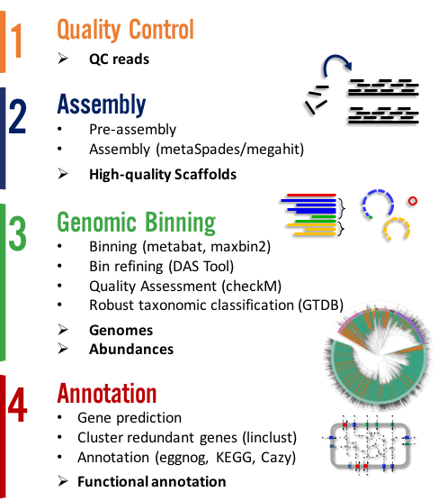

Metagenome-atlas is a easy-to-use metagenomic pipeline based on snakemake. It handels all steps from QC, Assembly, Binning, to Annotation.

Easy to use
You can start using atlas with three commands:
conda install -y -c bioconda -c conda-forge metagenome-atlas
atlas init --db-dir databases path/to/fastq/files
atlas run all
Atlas has only one dependency: conda. All databases and other dependencies are installed on the fly. Atlas is based on snakemake which allows to run steps of the workflow in paralel on a cluster.